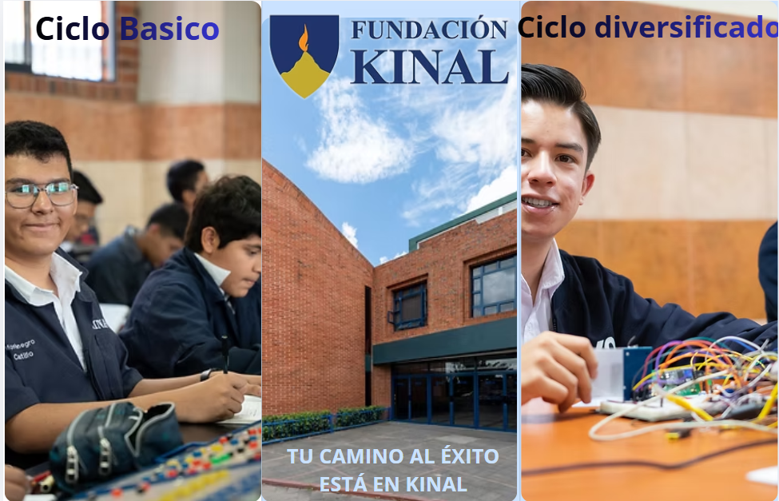

Mejoraría la estructuración y la organización general de la pagina.

Porque decidi que este diseño sea bueno bueno es porque lo primero que se enfocan las personas
al momento de quieren ver la pagina de Kinal es el ciclo basico y diversificado y al momento de dar click
los enviara por mas informacion es un diseño simple pero funcional ademas se que todavia faltan los demas
por ejemplo el plan de fin de semana pero algunas personas no saben que eso existe lo que mas les interesa
son el ciclo basico y diversificado